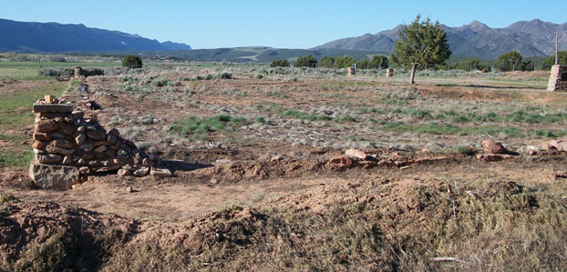
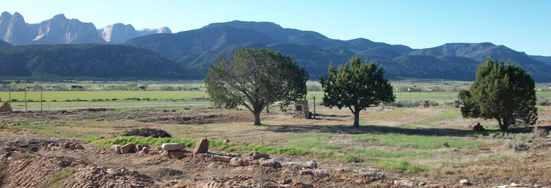

Chapter 5
In his patriarchal blessing, given by John Smith back in December 1845, Lorenzo is promised: "Thou shalt have power to accomplish a great work in gathering the remnants of Jacob, for thy mission lieth in the wilderness among the Lamanites upon the mountains and in these valleys, to hunt up those who have been cast and scattered far ages, to bring them to a knowledge of their fathers and also of the Lord their Redeemer, and they will flock around thee like a father and will rejoice in the good news thou wilt communicate unto them"1
In October General Conference of 1853, Lorenzo was called to go on a mission to the Indians in the region south of the areas that had so far been settled by the Latter-day Saints. Up to this point, only an exploring expedition had been in the area and the southernmost settlement, which was still very small, was Fort Harmony, in the newly formed Washington County. Both geographical entities had been created the year before, in 1852. The only significant settlement in the area was Parowan, 36 miles to the north of Harmony. The beginnings of Cedar City, at the time called Coal Creek, was just starting to be developed in 1852, so this was a significant event in the history of Southern Utah.
It was announced in the morning conference session, on October 8, 1853, that "over eighty" people were called on various missions.2 Lorenzo was specifically listed in a later enumeration of those to depart.3
The list of the missionaries is given along with all of their supplies, etc. Lorenzo Roundy is listed as number 12, grouped with David Lewis4 who is number 11. The two of them are shown to have the following:
1 Waggon, 4 Horses/Mules, 400 Flour, 1 Plough, 0 Axes, 2 Guns, 0 Swords, full Ammunition, 2 Cows, 2 Bush Wheat, 1 Bush Corn, 2 Pistol, 0 Cattle, and many Fixings & Notions.5 This was fairly representative of any in the group. There were 25 men listed in the tally.
The primary purpose of this mission was "to civilize & instruct the Indians in this region, that they might come up to inherit the blessings pertaining to them because of the works & promises of their Fathers."6More detail was given when Brigham young visited the missionaries in May. He said, in part: "God planted us here in the vallies of Ephraim, our business is to save Israel … you are to save the remnants of Israel in these mountains … not to help the white men, but to save the red ones, learn their language, … go with them where they go, live with them & when they rest let them live with you feed them, clothe them and teach them as you can ... you will soon be able to teach them in their own language, they are our brethren …"7
There are only a few references that specifically name Lorenzo Roundy in this account, but we know he was a part of the daily affairs. On page 2 of the diary, Brown lists Lorenzo Roundy as a seventy of the 2nd Quorum, from Davis County and that he was "Sent to Las Vegas," probably referring to his assignment later on.
The company departed on April 14, 1854. The record mentions that 18 of them were set apart on April 10th, but was not any more specific than that, but we know from later writings that Lorenzo had not been set apart at this time. Parley P. Pratt was listed as the president of the mission, but it was noted in the summary on page 2 that he was "Withdrawn and sent to California." Brown mentions on the day they departed that he (Pratt) "would follow and might overtake us, and give further instructions, setting apart those who had not met with us on the 10th…"8 The group met on the 13th, but were counseled to reassemble and start the next day. Elder Pratt never did join the group until he came with Brigham Young in their meeting in the latter part of May. Rufus C. Allen, an associate of Parley Pratt, was designated the Captain of the group. Later on that first day, Brown mentions that they called upon Joseph Smith, son of Hyrum, who had been appointed on a mission to the western Isles.9 This must have been when Joseph F. Smith was about to serve his mission in the Hawaiian Islands as a young man. It is amazing that these Saints had only been in the area less than 7 years and were sending their young men off on missions all over the world.
The journal history details the events of each day as the company progressed towards the south. As they passed Fillmore on the 25th of April, in the area of present-day Kanosh and Corn Creek, they encountered their first Indian groups, what Brown called "Indians of Walker's band." These people crossed their path and threw down a blanket, a gesture that they required payment to cross over their lands. Members of the group contributed "some bread & flour & tobacco" which seemed to please the Indians. They had another group to appease before continuing past the area.10
As they approached Dog Valley, north of Beaver, on April 26th, they met a group of traders headed for the Salt Lake Valley.11 Apparently, this group also included Chief Walker of the Indians, one of his squaws and a son. There were some communications there, through the interpreter, George Bean. The group of traders were trying to convince Walker to come to the valley to speak with Brigham Young, but he seemed to want to stay with his people until later in the year. There was some talk about some men who had been killed by the Indians, a month or so ago (or earlier). After some discussion and an altercation with another of the Indians, the day ended. The group continued southward the next day. They encountered more Indians, squaws covered with "mantillas" made of rabbit skins.12
On Saturday, the 29th, the group arrived at the fort in Parowan. Here a substantial amount of goods were contributed to the company. Also the Saints of Parowan cooked meals and invited the members into their homes. They even held a "Public Ball" for them - "a numerous party of happy souls joined in the dance."13 The group spent the Sabbath day at Parowan.
In Cedar City (Coal Creek settlement) they again met a number of Saints. They had a meeting. It was somehow reported to the local people that this group of missionaries "were a lot a discontents about ready to go to the Gold mines & were sent south, to get one years labor out of them ere they apostatized." Brown gave a summary of the group and the preparations, denying the reports. In the end, Brother Lee (John D. Lee) "testified as to the fidelity of of the missionaries, some of whom he knew in the Mo. (Missouri) troubles."14 Brother Lee was with the Roundy family on several occasions in Missouri and Illinois and would as well figure prominently in later events involving Lorenzo Roundy.
Thomas Brown talks about some of the feelings of the men, including John D. Lee's involvement and attitude in the next section, which took place on Tuesday, May 2nd15. They were "passing through some of the best grazing land I have seen in America and apparently the best of arable land arrived at Bror Jno. D. Lee's old settlement. It is evident at a glance Bror Lee has selected a tolerably retired small patch, but too small for more than one man and his family. In addition to the 25 men selected by Prest. P.P.Pratt - there are here many say 30 more selected by Bror Lee, all cramped up in this small place, and feeling more or less disappointed at not being permitted to go out and live on the Farm about 4 miles off, where they would be near their labor & abundance of food for their cattle."
He continues, "Capt. Allen, Brors Lewis, Atwood and Brown (himself) met in Council with Bror. Lee, to devise some means for the full development of the resources of this new field of labor, and the employment of all the missionaries, the better to carry out the wishes of Presidents Young and Pratt, in this new colony and among the Indians. After an exchange of thoughts and much candor of speech desiring to maintain our present organization till our president came, and Bror Lee desiring that [there] should be but one head and that this was his place though there had been no organization. It was agreed that we should co-operate and go and see the intended new location and the chance of our obtaining a sufficient supply of water for irrigating purposes, and the best course for carrying water to it. It was evident that Bror Lee was disappointed in Bror Pratt's not coming on with us as he wished him to select the new farming ground, cite (sic) for our fort, &c."16
The next few days, they divided up some plots for gardening in the "Old Fort" and new farm plots, prepared ground and planted. They then spent the Sabbath in resting and meeting together. The following week was spent mainly in putting in gardens and crops. They met some Indians and on the following Sunday, a number of people (including Indians) were rebaptized and some Indians baptized for the first time. They considered ordaining some of the Indians, but decided against it. All of the Indians were given "New Names" which were white man names. For example, Tooanap was called Dymock, Parooamp was called James, Pamonis called Michael (he was chief of the warriors) and Tooitapea was called Elijah.17 Through an interpreter, Brother Peter Shirts, they spoke to the Indians and the Indians spoke about their feelings and intention to do the right thing and be obedient. One of those present was apparently Terab, the son the Chief Toquer of the Indians down on the VIrgin River.18
They spent the next week mainly working on making irrigation ditches and getting the stream water to flow to the crops. As they were finishing work on Friday, the 19th, they received word that Brigham Young and a party of about 40 wagons had arrived and they desired to meet with them. President Young spoke to the group and Thomas Brown recorded his words.

Fort Harmony foundation from north east corner.
Photo by Joseph Buchanan
Brigham Young spoke to the missionaries counseling them to not put their labors in building and farming, but rather in living among the Indians, learning their language and having a positive influence in their lives. He spoke to the local settlers and told them to organize themselves. It was proposed to have John D. Lee be their president, to which Thomas Brown and some others objected, but President Young said that Brother Lee would be the Stake President and oversee the settlers, building, farming, etc. He then told them to build a new fort, "farther north" (New Harmony) and proceeded to describe how it was to be built.19
Parley P. Pratt also spoke to the group, but it was dark and Thomas Brown did not record much of his words, but did include his council to feed and clothe and join (fasten) with the Indians. It was said that Brother Davies was to be the Bishop. Heber C. Kimball also spoke to the group and prophesied that the Indians would be "thousands of them around us" and that the Saints and the Indians would be a blessing to each other.20
On Sunday, the 21st, Joseph Young held a meeting of the Seventies and gave council and made some leadership assignments for the settlements in the area. Since Lorenzo was of the Second Seventies Quorum, we can expect that he was in attendance. No mention has been made specifically of him in the journal so far. Parley P. Pratt also spoke to the congregation and gave a lot of council in dealing with the Indians. He spoke in detail about caring for them and treating them well. He said, "you my brethren and sisters are more of a mixed race than they are, they are descended from a royal race; you all have a measure of the priesthood. If you cannot yet talk with them, there is one language that all can understand and feel - kindness, sympathy, this they can feel."21
On Tuesday, the 23rd of May, in a meeting, Rufus Allen spoke to the missionaries and said, "I think we ought to take a trip south and see Toker, the chief of the Piede band, & how Israel lies scattered in the south" 22They agreed to leave on Thursday if the missionaries approved. In another meeting the evening of that day, those who had not yet been set apart for the mission were set apart, including Lorenzo Roundy. In that meeting, there was a bit of contention concerning some who were "being overanxious about going out on the trip south." Jacob Hamblin took offense at this, since he was anxious about being about the business of the mission, having already had experience with the Indians. An explanation and apology was given "which restored 'Harmony.'"23
Only a few of the company actually went south to visit Chief Toquer. It does not appear that Lorenzo was with that group. Most stayed behind and worked on getting the irrigation ditches working properly. There was a little disputing among the men concerning the problems of the work, but that was cleared up. The party that went south returned Sunday night the 28th. The group wrote letters, made a trip to Parowan to mail them and picked up some seed potatoes. They returned and continued to work at planting and getting the irrigation system working.24
Lorenzo is next mentioned on June 7th (Wednesday) as one of a group of eight (R. C. Allen, T. D. Brown, Lorenzo Roundy, W. Henefer, J. Hamblin, A. P. Hardy, A. G. Thornton, Thales Haskell and Henry Evans), that left to "prosecute our mission among the Indians south." They passed an Indian burial early on. With the guidance of a couple of Indian guides, they travelled on through the day 20 miles until they came to the camp of Chief Toquer.25
The group was welcomed. In particular Captain Rufus Allen was greeted by Chief Toquer with an embrace. The group contributed a little to the dinner that was being prepared. Thomas Brown gave many details of the camp, the food and its preparation and of Chief Toquer himself. The group stayed another day, seeing the Indian community, watching them plant and irrigate and Brother Brown described the conditions of the people. That next evening, the 8th, they visited with the Indians and were told that "we are hungry often, we want food, we are naked we want shirts, pants and hats."26
The group continued down Ash Creek, as they had done pretty much the whole way from New Harmony the days prior, and came to the Rio Virgin in the middle of the morning on June 9th. They passed some more Indian farm areas along the way. On the 10th they continued down the Rio Virgin, passing some Indian families and some who had come from the Santa Clara River area. During the morning of the 11th, they came to the Santa Clara River, called by the Indians "Tornaquint." There they found what Brown describes as "an old settlement, as are many corn lots abandoned" and "This place seemed more comfortable to me than any place we had come to." They met with some of the Indians there.27
The time at the Santa Clara was a significant point of this journey. Here they met the most Indians of their experience so far and interacted to a greater extent. It was here that Jacob Hamblin came later and established a community and worked closely with the Native Americans.
As they evaluated their status, the group realized that some of the missionaries had nearly run out of supplies. They decided rather than to spread everyone's supplies around which would cut into the time they could spend on the expedition, two of the members, Thales Haskell and H. Evans - "it was deemed wisdom that they should leave for Harmony."28 Here it was recorded that "Brors Roundy & Hamblins feelings were full and longed for the day when they could express their sympathies in the native Indian language."29
A group with their "train" (wagon train) met them on their way up the Santa Clara River. They seemed to be businessmen, or working to set up a freight business, looking for a route to California and included Col. (John) Reese, S. D. White, Daddy (Henry) Sherwood, P. Margetson and (Almon) Babbitt. A man referred to as "Abraham the Jew" was also with him; the footnotes refer to him as Levi Abrams. On the 17th of June, a Saturday, The group "appointed" Jacob Hamblin and William Henefer to stay behind with the Indians in the Santa Clara area until another group of missionaries could be sent down. The rest of the group would return to Harmony. In their meeting, a number of the brethren spoke to the group including Lo (Lorenzo) Roundy.30
The missionary group travelled with this train up the river, through Mountain Meadows and a number of valleys, naming them after several of their company, e. g. Allen's Valley and Brown's Valley. As they came over a particularly difficult pass, they named it "Roundy's Pass" because he "led the way." In the next sentence, the writer says "A little to the N. E. of this we discovered where a much easier way might be made." I assume that therefore, the fame of having a pass named after him soon passed. From there they returned back to Harmony, arriving there on the 19th and "rejoiced" to see the improvements made to the fort and corral while they were gone.31
On the following Wednesday, the 21st, another company started their journey back down to the Santa Clara, including "Brors Lewis, Robinson, Hatch, Riddle, Knights and Burges." They went westward this time, back through the pass, "that northward of Roundy's pass named above, this we shall call Burges' Pass."32
As the summer progressed, the missionaries worked at getting water to their crops and worked to keep things going, also spending time learning the Indian language and attending to their basic needs in this frontier region. On the 30th of June, the journal mentions that Lorenzo left in company with Brothers Allen and Hardy to go to Parowan "… thither to spend the 4 July and perhaps visit the Indians on the Fish Lake." This Fish Lake is mentioned a number of times in the record, and it becomes clear that this lake is somewhere near to Parowan and not the Fish Lake as known today near Richfield. [p 74]
The group returned to camp on July 6th. They reported to the group, upon returning, that "the Indians there were saucy, asking meat and flour & not receiving it, go up into the Kanyons and cut & fall trees across the road , tear up some bridges &c." [p 75] By this time, the water was dwindling and the men were getting worried about their plight and the possibly loss of their crops. Some suggested that the group return to their homes and labor for the coming year and come back later. Several objected to this including Lorenzo who is reported saying: "THe crops do not at present seem worth much, but the Prophets have told us this is the place for this year. We are to strengthen this place and help build it up."33
The group continued their work for a couple more weeks. On the 17th, it is reported that a number of the brethren "agreed to go home to Gt. S. Lake City to see their families, to attend to their affairs there & make some wheat and provision for the next year." This group included Lorenzo Roundy and Jacob Hamblin, among others. The rest, who did not go north, all went to Cedar City and Parowan to "labor for their breadstuffs there … as our crops at Harmony had failed from want of water & being too late sown."34
The next reference to Lorenzo is on Aug. 28th when it is reportedly resolved to write to the men, asking them "to return with all speed."35Thomas Brown does not make any mention of the men returning. Near the end of September, he goes to Salt Lake to attend conference and see his own family.
Over the next few months, the missionaries worked at building homes and the fort. Through this time, and to some extent from the beginning of the record, it becomes evident that there is a clash of wills and attitudes between some of the men and John D. Lee. Since the writing comes from Thomas Brown, it is likely biased in his direction, though in other records, it shows that there also is some friction between Lee and Lorenzo Roundy, though at this time, the relationship seems to be good. In a particularly contentious meeting on December 3rd, Brown reports that there are accusations of Lee putting in "rotten adobes" and trash in the fort wall where standard adobes of specific size and quality are supposed to be used. In part of the discussion, concerning the makeup and power of the building committee, Lee says, "he had appointed Lorenzo Roundy - the bos-workman & reserved to himself [Lee] the right of being his counsellor and if said Roundy did not interfere - the building Committee had no right. … He was appointed to build this Fort and he only was responsible."36
In a later entry, Brown, who often uses poetry and song, authored by himself, included Lee and Lorenzo in such a poem concerning that meeting. In a response to the captain of the group, R.C. Allen. In an entry dated Wednesday 6 (December)37, he writes:
1 "Your note I have seen, & its contents I ween,
Are pleasing to God & man,
Ten days have been cold, as the winters of old
Yet some have been hauling their sand.
2 "If the weather prove fine, in very good time
We resume on the Fort 'gain to morrow,
But if Boreas cold, from the north again Scold
We'll come down south. without any sorrow
3 "The Building Committee, Oh dear what a pity!
Have now got nothing to do,
But as chief bos Lorenzo, & Lee for his ends, oh!
Still chiefer - doth lead - they pursue!"
The next day, we see an ominous indicator of future problems with the report in the journal: "We learn that Sanpitch, Bror [brother] to [Chief] Walker went to Santa Clara & tried to persuade Tatsagobits & the Pahutes there not to have the missionaries among them & certainly not suffer them to build there, & live among them, unless we paid them oxen, horses &c. and he asserted the land was not theirs but Walkers!" When Captain Allen asked the chief, Tatsagobits, whether the missionaries should quit building and go home, "after thinking a little bit he said go on I want you to live among us and help us."38

Fort Harmony foundations.
Photo by Joseph Buchanan
During the winter months, they worked at building homes, fences and in surviving the cold. In all this, nothing was mentioned of Lorenzo except on December 1339 where it was mentioned "Was a part of this day engaged in laying rock for Lorenzo Roundy's house." The iron works in Cedar City was increasing and some of the men were involved somewhat. They held a number of meetings as Seventies.
In February, Lorenzo co-wrote a letter/report that was sent to Brigham Young.40
According to this letter, it appears that Lorenzo is now assigned to work up at Summit Creek, likely the location of present-day Summit, between Cedar City and Parowan. However, we do find reference to Lorenzo in a few entries of Brown's journal. The first two of these references have to do with Lorenzo being part of a council of judgement. On March 30, 1854, there is a Bishop's council held where Lorenzo is a counselor. 41On April 26th, he is called upon to judge in a matter concerning property of Thomas Brown begin divided with two other brethren, Brown disagreeing with the final decision.42
The only reference beyond this point is a note concerning the death of a mare that was sold to Lorenzo in trade for 14 head of stock. The mare died leaving a young colt. This was recorded on the 28th of April, 1855.43
After this point in the journal, details were fewer and eventually a note is entered that Brown lost his manuscript journal (note dated 11 January 1858), and that the rest would be recorded from memory. Brown's journal ends with no further reference to Lorenzo Roundy.
1 no. 1599 - Nauvoo, Illinois, December 30, 1845, Vol 9:544
2 General Church Minutes - CR100%20318_2_64_5
Note: Some sources say that the call came on October 6th, but the reference found in the conference report, under Elder Bullock's name as the person reading the announcement, was listed as October 8th.
3 This list shows up in a number of references. The publication, "Journal of the Southern Indian Mission - Diary of Thomas Brown" [edited by Juanita Brooks, published by Utah State University Press, Western Text Society Number 4, 1972] has the most detail. References in the following pages refer to this document, as published, edited by Juanita Brooks.
4 ibid, The editor mentions in a foot note that Lewis, 1st Lieut. of the group, is the only member of the group who died while on this mission - note 2, page 4
40 Brigham Young Letters, Box 24, folder 10 (reel 34):
Harmony Feb the 9th 1855
Beloved President, Brigham Young,
Through the blessings of God our Heavenly father, we as a colony enjoy good health, as also the spirit of union & pease. In consequence of the drouth last summer, & other difficulties there was not adobies made sufficient only to rear our fort some eight or nine feet high, we went to work united and have put it up as high as we could with the material already at hand. The missionary company takeing about one fourth of the same, as you counseled us last spring when here, but how shall we be able to complete our portion of this work when the larger portion of our company is to be located at other points remote from this as recently determined by Brother Allen. Further, Bro. Roundy was chosen by the colony to take the supervision of the building, but is now ordered to Sumit Creek, to remain their until next fall. Many of the rest are placed in like circumstances, and will not be able to have their portion of the material ready to complete our place of defence. We do wish to do our duty in all things, and not a man will shrink from the requirements of Bro. Allen, although many do not feel well under such moves, but if these things are according to your mind & will, all will respond to it with a hearty amen, but if on the other hand you should think otherwise, a word of counsel from you on this subject and any others would be received with gratitude & hailed as a blessing by this colony. We feel the importance of fortifying this place, and at the same time improve every oportunity of wielding an influence with the natives, both by precept & example - in teaching them to cultivate the soil that thereby they may obtain a sustenance & feel to repon [?] confidence in us as friends. The Utes, in passing South through the place, have influenced the Piedes to commit many depredations in killing cattle, sheep & stealing our corn, potatoes & other produce. These depredations were mostly committed during the absence of the missionary company, while engaged at Parowan & Cedar City, labouring for their bread. Therefore it does seem to us, that Parowan & Cedar City are quite as competent to manage the natives around them, as the few here at Harmony are, to manage the Natives in this valley, Big Ash Creek and San Taelara. This being the last settlement in going south, is naturally the most exposed & if the Indians feel a disposition to commit hostilities or depredations we undoubtedly are the ones to suffer. On one occasion this winter we were on the eve of having a battle, but the Lord interposed in our behalf, softened the hearts of the Lamanites & restored peace. But we deem it useless to bring up the many reasons which might be addressed in favour of making this the grand rallying point, for accomplishing that which we were sent here to accomplish. But knowing you are measurably acquainted with our location, and the circumstances with which we are surrounded, we feel to submit these reflections, for your consideration knowing that whatever disposition you make of them will be right with us, as we feel to repose unlimited confidence in your judgement, and if we know our own minds, our object is to do that which will most facilitate the building up the Kingdom of God on the Earth. We feel dedicated to the cause with all that we have or are. We would say with reference to Brother John D Lee, he has managed the affairs of this place in wisdom, and if allowed our opinion, the only possible plan was adopted for the spedy accomptlishment of the work assigned him here. A good spirit is manifested here, and good feelings prevail with some slight exceptions. We have from time to time been warned of approaching dangers & difficulties, and thereby able to ward off the intended evil. We attribute our preservation this far to the overruling hand of Providence. We do wish to do that which may be required of us, and thereby have the approbation of our Father in Heaven, of the authorities of this church, and those placed over us. May the God of Israel continue to bless and prosper you in this Kingdom, and cause you to live to see zion redeemed. Amen
Robert Richey
Lorenzo W. Roundy
President Brigham Young